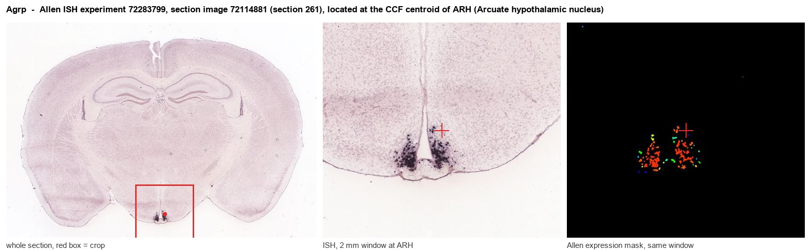
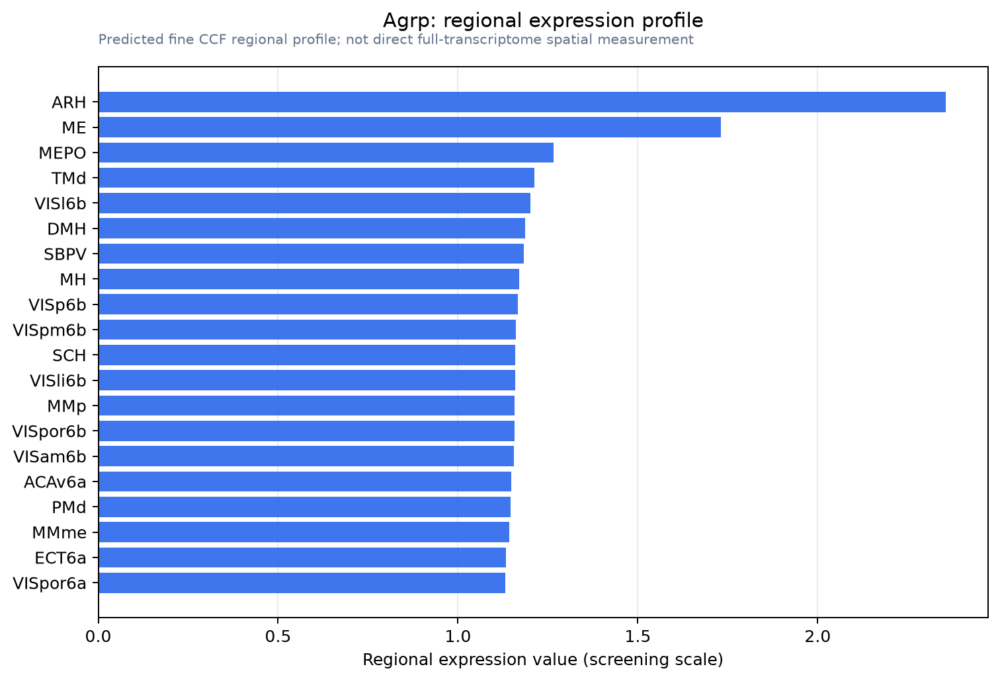

Agrp
Spatial tier: STRICT_EXCLUSIVE · Class: OTHER · Top region: ARH (Arcuate hypothalamic nucleus) · Positive regions: 8/554
41.8Discovery Score
38.5Targetability Score
CEvidence grade C
What this means: Agrp: predicted fine-region profile is strict-exclusive, with 8 positive regions out of 554 (limit 12); direct spatial validation is required.
Function in ARH: evidence, prediction, innovation
- Gene function
- Agrp encodes agouti-related peptide, a secreted neuropeptide that is an inverse agonist/competitive antagonist at melanocortin MC3R and MC4R, opposing alpha-MSH released from POMC neurons. AgRP neurons co-release GABA and NPY, so they inhibit downstream targets by three parallel signals. Circulating leptin, insulin and ghrelin set their firing rate.
- Region function
- The arcuate hypothalamic nucleus sits at the median eminence and senses circulating metabolic hormones, housing the antagonistic AgRP/NPY and POMC populations that set feeding drive, energy expenditure and neuroendocrine output.
- Published in this region
- direct Krashes et al. 2011 (J Clin Invest) showed chemogenetic (hM3Dq) activation of ARH AgRP neurons drives voracious feeding in sated mice within minutes, reversibly, while adult ablation causes starvation. Chen et al. 2016 (eLife) used photometry and optogenetics to show AgRP activity falls within seconds of food detection and acts as a sustained teaching signal. Deem et al. 2022 (FEBS J) reviews ARH AgRP projections to PVH, BNST, LHA and PBN.
- Predicted function
- Prediction: AgRP peptide from these ARH neurons sustains feeding by relieving MC4R tone at PVH and other targets, with GABA/NPY co-release carrying the fast component. Agrp knockout alone is mild because of this redundancy, whereas adult ablation causes anorexia and MC4R blockade (SHU9119) causes hyperphagia and obesity.
- Innovation
- ★☆☆☆☆ 1/5 AgRP in the arcuate nucleus is one of the most intensively studied gene-region pairs in systems neuroscience.
- Tools
- Agrp-IRES-Cre (JAX 012899), Agrp-IRES-Cre;DTR ablation lines, Npy-hrGFP reporter (JAX 006417), Agrp knockout mice, hM3Dq/hM4Di and ChR2 AAVs, MC4R agonist MTII and antagonist SHU9119, anti-AgRP antibodies.
- References
Direct evidence located at the region

Allen ISH experiment 72283799, section image 72114881 (section 261): the section that contains the CCF centroid of Arcuate hypothalamic nucleus according to the Allen image-to-atlas alignment (reference_to_image), with a 2 mm window around that point. Left: whole section, red box = window. Middle: ISH signal. Right: Allen's expression-mask view of the same window. open this image in the Allen viewer
Look it up yourself: Allen Mouse Brain ISH for AgrpAllen reference atlas: ARH (structure 223)ABC Atlas MERFISH viewer(in the ABC Atlas choose dataset MERFISH-C57BL6J-638850-CCF, colour cells by gene "Agrp" or by parcellation_substructure "ARH")All genes confined to ARH + 3-D brain
Direct spatial evidence
MERFISH REGION LOCATOR

Regional expression figure

Predicted WMB × fine-CCF profile; not direct full-transcriptome spatial measurement.
Spatial profile
Evidence and specificity
- Evidence status
- PREDICTED_FINE
- Direct sources
- None; predicted localization only
- Exclusive threshold
- 12 positive regions out of 554
- Spatial specificity
- 0.279
- Top-region fraction
- 0.071
- Filter status
- PASS
Interpretation limits
- Cell-type-to-region projection is imputed expression, not direct spatial measurement.
- Adult reference atlases do not establish stability across age, sex, strain, state, or disease.
- Transcript abundance does not guarantee protein abundance or genetic-tool performance.